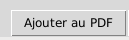
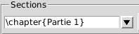
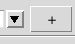
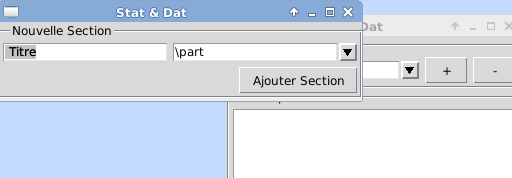
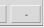

Dans chaque fenêtre d'analyse, vous trouverez un bouton permettant de mettre en place l'analyse concernée. 
Dans la fenêtre qui s'ouvre, choisissez l'emplacement du rapport dans la liste déroulante. 
Si l'emplacement soushaité n'est pas dans le cadre, créer-en un avec le bouton .
L'application vous demande de choisir le type de section dans le menu déroulant et de préciser le titre que vous souhaitez avoir.

Si la section n'existe pas encore dans le fichier .tex, l'application s'en chargera.
Si vous souhaitez supprimer des sections proposées dans le cadre, qui selon vous n'ont plus leur utilité, cliquez sur .
Après avoir validé cette procédure,l'élément de l'analyse est intégré au rapport et vous pouvez continuer à analyser vos données ou compiler le compte-rendu au format PDF en sélectionnant Editer > Editer le pdf dans la fenêtre principale.

Stat'nDat - 11 Mai 2015 Accueil